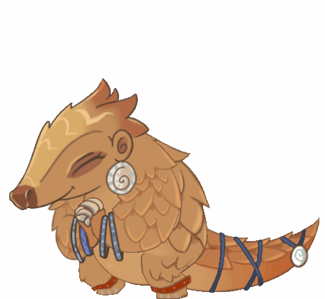

Few Facts About PANGOLINS

PANGOLINS aka ANT EATERS
May 27, 2020 by Gourav Sharma
There are eight species of Pangolin. Four are found in Asia: the Chinese, the Malayan, the Indian and the Palawan Pangolin. Four are found in Africa: the Tree Pangolin, the Giant Ground Pangolin, the Cape Pangolin and the Long-tailed Pangolin.
The name Pangolin is derived from the Malay word ‘pengguling’, which means ‘rolling up’. This is reference to the animal’s defence mechanism of rolling up into a tight little hardened ball when they are under threat.
With no teeth, and unable to chew, the insects are broken up by stones and keratin spines located inside their stomachs.
They are nocturnal, solitary animals with very poor eyesight. Their sense of smell and sound is supreme and is used to hunt out termite mounds and ant hills.
Pangolins are the most trafficked animals on the earth , and they are supposed to be a source of COVOD19
sources #onekindplanetorg